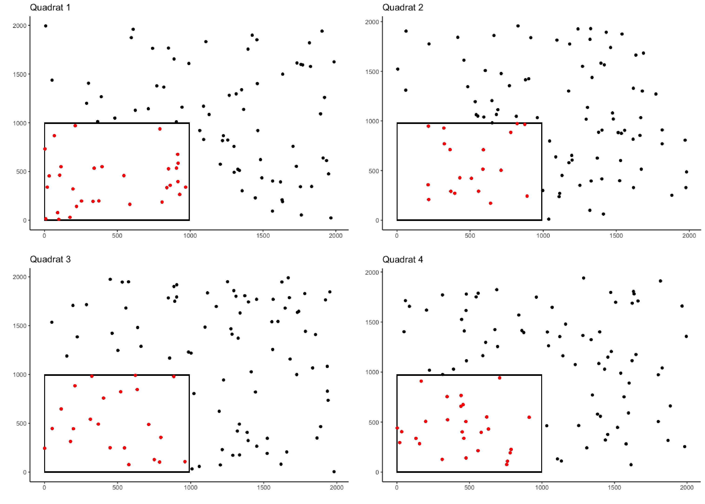

Overview
quadcleanR is a customizable tool to clean up ecological data collected from quadrats. This package will aid you in cleaning, processing and assessing your quadrat data, as well as provide intuitive ways to add additional information to your data sets. If you work with quadrat data (or similar data), this package will help to speed up the cleaning of your data so you can spend your time on further analyses.
Installation
#currently quadcleanR is in the development phase and can only be
#downloaded from GitHub directly:
install.packages("devtools")
devtools::install_github("DominiqueMaucieri/quadcleanR")Example Usage
There are three vignettes included with this package which will walk through different examples of cleaning quadrat data. The Simple Cleaning Quadrat Data vignette will produce data which is visualizable with this example shiny app.
library(quadcleanR)
library(ggplot2)
#Creating a vector of the soft coral genera
tags <- c("Cladiella", "Sinularia", "Sarcophyton", "Lobophytum")
#Creating a vector of quadrat names
rep <- c(rep("Q1", times = 100),
rep("Q2", times = 100),
rep("Q3", times = 100),
rep("Q4", times = 100))
#Creating a vector of randomized row locations
row <- c(sample(x = c(0:2000), size = 100, replace = TRUE),
sample(x = c(0:2000), size = 100, replace = TRUE),
sample(x = c(0:2000), size = 100, replace = TRUE),
sample(x = c(0:2000), size = 100, replace = TRUE))
#Creating a vector of randomized column locations
column <- c(sample(x = c(0:2000), size = 100, replace = TRUE),
sample(x = c(0:2000), size = 100, replace = TRUE),
sample(x = c(0:2000), size = 100, replace = TRUE),
sample(x = c(0:2000), size = 100, replace = TRUE))
#Creating a vector of randomized identification labels
label <- c(sample(x = tags, size = 100, replace = TRUE),
sample(x = tags, size = 100, replace = TRUE),
sample(x = tags, size = 100, replace = TRUE),
sample(x = tags, size = 100, replace = TRUE))
#Joining vectors into a data frame
coral_annotations <- data.frame(rep, row, column, label)
crop_area_coral <- crop_area(data = coral_annotations, row = "row",
column = "column", id = "rep", dim = c(0.5, 0.5))
#Plotting each quadrat
ggplot(coral_annotations[1:100, ], aes(x = column, y = row)) +
geom_point() +
theme_classic() +
labs(y = "", x = "", title = "Quadrat 1") +
geom_rect(
aes(
xmin = 0,
xmax = 0.5 * max(column),
ymin = 0,
ymax = 0.5 * max(row)
),
color = "black",
alpha = 0
) +
geom_point(data = subset(crop_area_coral, rep == "Q1"),
color = "red")
ggplot(coral_annotations[101:200, ], aes(x = column, y = row)) +
geom_point() +
theme_classic() +
labs(y = "", x = "", title = "Quadrat 2") +
geom_rect(
aes(
xmin = 0,
xmax = 0.5 * max(column),
ymin = 0,
ymax = 0.5 * max(row)
),
color = "black",
alpha = 0
) +
geom_point(data = subset(crop_area_coral, rep == "Q2"),
color = "red")
ggplot(coral_annotations[201:300, ], aes(x = column, y = row)) +
geom_point() +
theme_classic() +
labs(y = "", x = "", title = "Quadrat 3") +
geom_rect(
aes(
xmin = 0,
xmax = 0.5 * max(column),
ymin = 0,
ymax = 0.5 * max(row)
),
color = "black",
alpha = 0
) +
geom_point(data = subset(crop_area_coral, rep == "Q3"),
color = "red")
ggplot(coral_annotations[301:400, ], aes(x = column, y = row)) +
geom_point() +
theme_classic() +
labs(y = "", x = "", title = "Quadrat 4") +
geom_rect(
aes(
xmin = 0,
xmax = 0.5 * max(column),
ymin = 0,
ymax = 0.5 * max(row)
),
color = "black",
alpha = 0
) +
geom_point(data = subset(crop_area_coral, rep == "Q4"),
color = "red")
Getting Help
If you find a bug, please let me know by adding a reproducible example on GitHub.
Additionally you can contact me with further inquiries at dominiquemaucieri@gmail.com